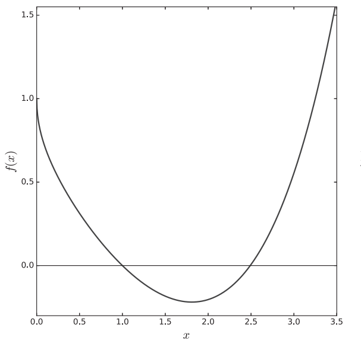

Roots II
Minimization
1 Minimization
In this lecture, instead of finding function zeros, we are now going to be locating function minima. Note that we will be studying the problem of unconstrained minimization, meaning that we will not be imposing any further constraints on our variables; we are simply looking for the variable values that minimize a scalar function.
1.1 One-Dimensional Minimization
For simplicity, let’s start from the case of a function of a single variable, \phi(x). As you may recall from elementary calculus, a stationary point (which, for a differentiable function, is also known as a critical point) is a point at which the derivative vanishes, namely \phi'(x^*) = 0 where we are now using x^* to denote the stationary point. If \phi''(x^∗) > 0d we are dealing with a local minimum, whereas if \phi''(x^*)< 0 a local maximum. Minima and maxima together are known as extrema.
A simple example is our function \phi(x) = e^{x - \sqrt{x}} - x. In the previous section we see that it has two zeros at \simeq 1 and \simeq 2.5. We are interested in its minimum, which is located at x^* \simeq 1.8, as can be seen in Figure 1.

It is easy to see that \phi''(x^*)>0 so that is a (single) minimum. To find out this minimum, we can in principle apply the root finding method you learned last time on the function f(x) = \phi'(x).
1.2 Multidimensional Minimization
The problem of multidimensional minimization is, in general, much harder to solve; as the dimensionality grows one cannot even visualize what’s going on very effectively. We start with some mathematical aspects of the problem, then turn to a two-dimensional example, and after that discuss specific minimization methods.
General Features
Consider a scalar function of many variables, i.e., \phi(\boldsymbol{x}), where \boldsymbol{x} bundles together the variables x_0, x_1,\dots, x_{n−1} but \phi produces scalar values. We will now employ a multidimensional Taylor expansion. Also, in order to keep things general, we will not expand around our latest iterate, \boldsymbol{x}^{(k−1)}, since we are not introducing a specific method right now; we are simply trying to explore features of the problem of minimizing \phi(x).
We assume \phi(\boldsymbol{x}) has bounded first, second, and third derivatives. Then \phi(\boldsymbol{x} + \boldsymbol{q}) = \phi(\boldsymbol{x}) + (\nabla\phi(\boldsymbol{x}))^T\boldsymbol{q} + \frac{1}{2}\boldsymbol{q}^T\boldsymbol{H}(\boldsymbol{x})\boldsymbol{q} + O(\|\boldsymbol{q} \|^3).
Here, the first-order term involves \nabla\phi(\boldsymbol{x}), the gradient vector of \phi at \boldsymbol{x}. This is \nabla \phi(\boldsymbol{x}) = \left(\frac{\partial\phi}{\partial x_0} \quad \frac{\partial\phi}{\partial x_1} \quad \dots \quad \frac{\partial\phi}{\partial x_{n-1}} \right)^T. The first order term is simply (\nabla\phi(\boldsymbol{x}))^T\boldsymbol{q} = \sum_{j=0}^{n-1} \frac{\partial \phi}{\partial x_j} q_j = \nabla\phi(\boldsymbol{x})\cdot \boldsymbol{q}.
Note that \nabla \phi(\boldsymbol{x}) is the direction of steepest ascent, to which we will come back later. To see this, we have for small \boldsymbol{q} the term linear in \boldsymbol{q} is the dominant contribution since \|\boldsymbol{q} \|^2 \ll \| \boldsymbol{q} \|. If we choose \boldsymbol{q} to be aligned with \nabla \phi(\boldsymbol{x}), then the dot product \nabla\phi(\boldsymbol{x})\cdot \boldsymbol{q} will be maximized.
Assuming \boldsymbol{x}^∗ is a local minimum of \phi and ignoring higher-order terms we have \phi(\boldsymbol{x}* + \boldsymbol{q}) \simeq \phi(\boldsymbol{x}^*) + \nabla\phi(\boldsymbol{x^*})\cdot \boldsymbol{q}. On the other hand, if we choose \boldsymbol{q} to be aligned in the direction of -\nabla\phi(\boldsymbol{x}), then \nabla\phi(\boldsymbol{x})\cdot \boldsymbol{q}<0 whenever \nabla\phi(\boldsymbol{x})\neq 0. This then means \phi(\boldsymbol{x}* + \boldsymbol{q}) < \phi(\boldsymbol{x}^*), in contradiction to the fact \phi(x^*) is a local minimum. Because of this, we must have \nabla \phi(\boldsymbol{x^*}) = \boldsymbol{0} at local minima (in general extrema or critical points).
Having established that the gradient vector vanishes at a critical point, we now turn to the second-order term in the Taylor expansion, which involves the Hessian matrix, \boldsymbol{H}(\boldsymbol{x}). To see what this is, we expand the quadratic form as follows \frac{1}{2}\boldsymbol{q}^T \boldsymbol{H}(\boldsymbol{x})\boldsymbol{q} =\frac{1}{2} \sum_{i,j = 0}^{n-1} \frac{\partial^2\phi}{\partial x_i\partial x_j} q_i q_j. This means the matrix element H_{ij}(\boldsymbol{x}) \equiv (\boldsymbol{H}(\boldsymbol{x}))_{ij} =\frac{\partial^2\phi}{\partial x_i\partial x_j}.
Since the lowest order in Taylor expansion is the second order, we have \phi(\boldsymbol{x}* + \boldsymbol{q}) \simeq \phi(\boldsymbol{x}^*) + \frac{1}{2}\boldsymbol{q}^T \boldsymbol{H}(\boldsymbol{x}^*)\boldsymbol{q} + O(\|\boldsymbol{q} \|^3).
If we now further assume that \boldsymbol{H}(\boldsymbol{x}^∗) is positive definite (meaning \boldsymbol{v}^T \boldsymbol{H}\boldsymbol{v}>0, \forall \boldsymbol{v} \neq \boldsymbol{0}), then we can see that, indeed, \phi(\boldsymbol{x}^* + \boldsymbol{q}) > \phi(\boldsymbol{x}^*), as it should, since \boldsymbol{x}^* is a minimum.
To summarize:
a necessary condition for x∗ being a local minimum is that it be a critical point, i.e., that its gradient vector vanish, and
a sufficient condition for the critical point x∗ being a local minimum is that its Hessian matrix be positive definite.